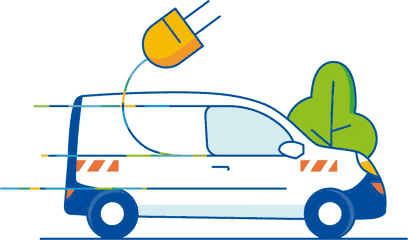

Le logo choisi remplace celui de l'en-tête et figure en haut du PDF. Par défaut : logo Enedis.
Les serveurs publics gratuits sont limités à ~1 requête/seconde. Pour un usage intensif, renseignez votre propre serveur Valhalla.